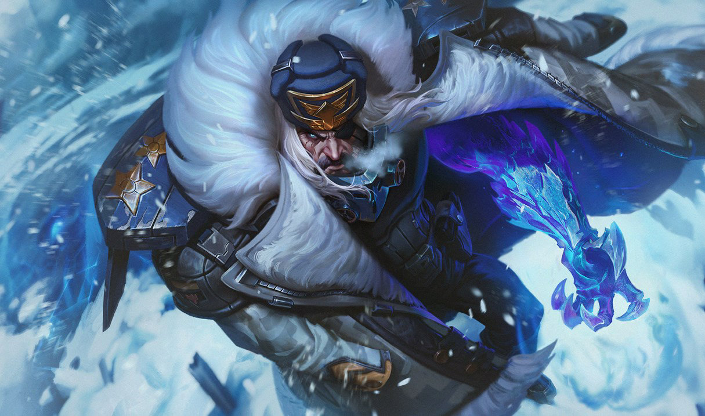

Galerie


Swain est un personnage légendaire de la nation de Noxus. Anciennement un général brillant, il a utilisé ses talents de stratège pour conquérir et diriger Noxus d'une main de fer. Après avoir fait face à une trahison, il a été transformé en un homme plus puissant que jamais, possédant des pouvoirs magiques issus des âmes des ennemis qu'il a vaincus.
"Le pouvoir, comme les âmes que je récolte, se trouve dans les ténèbres."
"Noxus se redresse toujours, et j'en suis la lame qui tranche."
🔒 Un secret bien gardé... 🔒 Swain a toujours eu plus d'un tour dans son sac, mais aujourd'hui, il s'apprête à révéler quelque chose de bien plus sombre. Es-tu prêt à découvrir ce qu'il cache dans les ombres ? 👉 Appuie sur le bouton pour lever le voile sur son secret le plus intime... Une révélation qui pourrait bien changer ta vision du Maître de Noxus à jamais...